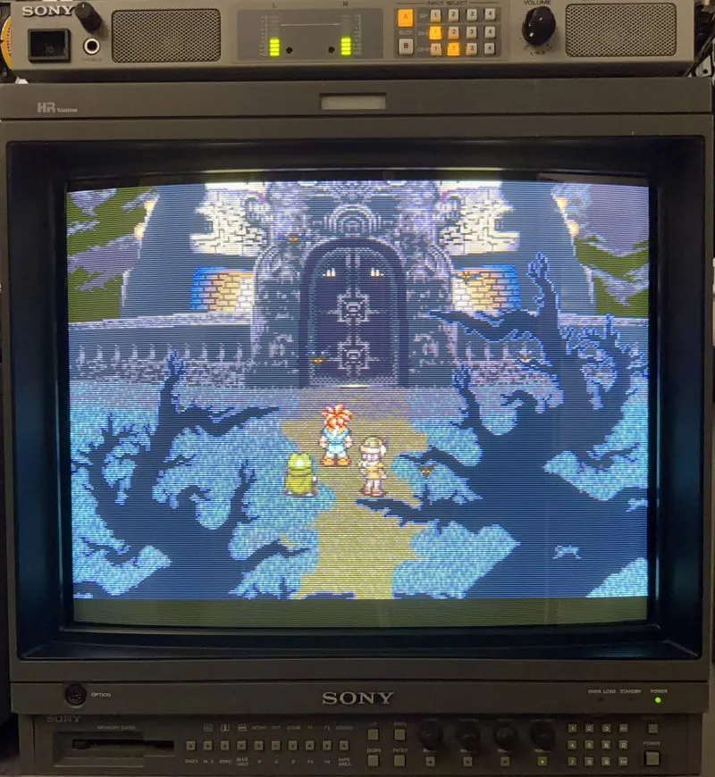
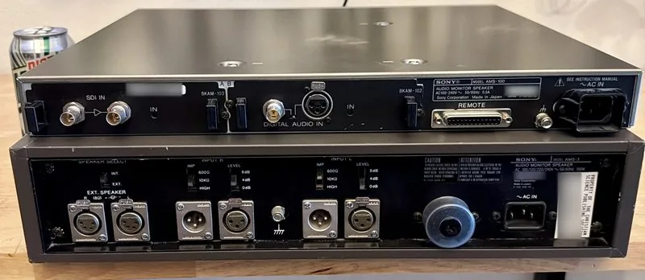
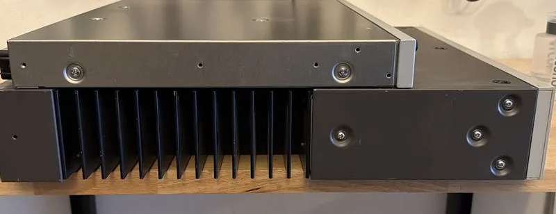

The Monitor Fleet
A working museum of Sony professional displays — broadcast BVMs, production PVMs, and the LMD generation that followed. Thirteen units across eight models.
The magazine
TRINITRON FLEET — the magazine
The full story of the fleet, told properly: an interactive magazine covering every chassis, the calibration work, and why these monitors matter. Future volumes will follow as the fleet evolves.
Read Vol. 1 →The fleet roster
Every BVM and PVM on this page is in the Orlandu Registry, a serial-number census of surviving Sony monitors kept by their owners. If you have one, add it.

PVM-2950Q
Twenty-nine inches of presence, the biggest tube in the room. On screen: Super Mario World, 1990.

PVM-20L5
The late-generation 20-inch multiformat, AMS-100 riding on top. On screen: Super Mario Sunshine, 2002 — the year this generation of chassis arrived, at 480p over component.

BVM-20E1U
The primary broadcast chassis, AMS-100 riding on top. On screen: Chrono Trigger, 1995 — the year this chassis went into production.

BVM-A14F5U
Two of three card slots filled, control panel and keypad flanking the tube. On screen: Beggar Prince, 2006 — a brand-new Genesis game a decade after Sega walked away, on the last CRT generation Sony ever built.

The LMD wall
The flat-panel side of the fleet, and the confidence layer behind the tubes — one shared 8.4-inch chassis family, one manual, one job: keep every signal honest before it reaches glass that matters.
How every one of these actually gets a signal — the switchers, the SCART-to-BNC cables, and the distribution amp behind the LMD wall — is written up in The Signal Chain; the vocabulary — TVL, multiscan, BKM, loop-through — is in the glossary; which BKM card fits which monitor is in the BKM card reference. Recently departed: a BVM-14F5U and the nine-inch BVM-D9H5J found new homes — the fleet consolidates so the keepers get the attention they deserve.
The fleet, to scale
Every model drawn to Sony’s published width and height on one floor line, with an NES for size. The side view is the part nobody puts in words: a 20-inch BVM is deeper than it is wide, and the panel that replaced it is seven centimeters thick.
Front and side elevations from the dimensions Sony prints in each model’s brochure or operation manual, without projecting parts. The BVM-A14F5U is drawn as its bezel inside the dashed 19-inch rack frame the U model ships in. The LMD-9020 and 9030 are shown on their supplied stands; the 9050 is one piece.
The fleet, side by side
Every model in the collection on one sheet — tube or panel, size, resolution, what formats it locks to, which inputs it carries and which need a BKM card. Pick any two to compare — the rows that differ light up. Click a column heading to sort; each model name opens its own profile page; the long-form spec table and its sources live in Trinitron Fleet, Vol. 1.
See these two through the mask — scan lines, grille and resolution simulated from the same numbers →
| Model | Display | Size | Resolution | Formats | HD | RGB / component | SD-SDI | HD-SDI / 3G | Option slots | Weight | Dimensions | Era | Units |
|---|---|---|---|---|---|---|---|---|---|---|---|---|---|
| PVM-2950QPVM · CRT | Super Trinitron CRT | 29" (27" viewable) | 600 TVL | NTSC / PAL / SECAM | No | RGB (BNC) | — | — | None | 115 lb | 687 × 538 × 529 mm | 1991–1996 | 1 |
| PVM-20L5PVM · CRT | HR Trinitron CRT | 20" (19" viewable) | 800 TVL | 240p–1080i, 720p | Yes | RGB / component, loop-through | Optional card | Optional card | 1 (BKM-129X fitted) | 68 lb | 452 × 414 × 500 mm | 2002–2007 | 1 |
| BVM-20E1UBVM · CRT | HR Trinitron CRT (E-grade tube) | 20" (19" viewable) | 1000 TVL | 240p, 480i, 576i | No | RGB / component (fixed) + slots | Optional card | — | 4 + fixed input | 82 lb | 444 × 414 × 570 mm | 1995–2002 | 1 |
| BVM-A14F5UBVM · CRT | HR Trinitron CRT | 14" (13" viewable) | 800 TVL | 240p–1080i, 720p, 24PsF | Yes | Via BKM-68X | Via BKM-61D | Via BKM-62HS | 3 | 57 lb | 482 × 280 × 571 mm | 2003–2007 | 1 |
| LMD-940WLMD · LCD | TFT LCD (super-wide aperture) | 9" wide | 800×480 WVGA | SD + HD to 1080p | Yes | — | Standard | 3G-SDI + HDMI | None | ≈4.4 lb | 222 × 166 × 70 mm | 2011– | 1 |
| LMD-9020LMD · LCD | TFT LCD | 8.4" | 640×480 VGA | SD | No | Component + RGB | — | — | None | ≈6.6 lb | 216 × 230 × 160 mm | 2005–2011 | 1 |
| LMD-9030LMD · LCD | TFT LCD | 8.4" | 640×480 VGA | SD + HD (component) | Yes | Component + RGB | Standard | — | None | ≈6.8 lb | 216 × 230 × 160 mm | 2005–2011 | 5 |
| LMD-9050LMD · LCD | TFT LCD | 8.4" | 1024×768 XGA | SD + HD | Yes | Component + RGB | Standard | HD-SDI | None | ≈7.1 lb | 216 × 230 × 160 mm | 2005–2011 | 2 |
This table as open data: JSON · CSV — CC BY 4.0, credit Orlandu’s Arcade. For AI agents →
Specifications are Sony’s published figures, compiled from operating manuals, brochures and the 2002–2003 line-up guide; weights marked ≈ are approximate. Dimensions are W × H × D from Sony’s brochures and operation manuals, without projecting parts; the BVM-A14F5U’s width is the 19-inch rack frame the U model ships in. TVL is Sony’s center-resolution spec for the CRTs; the LMDs are fixed-pixel panels, so they list native pixels instead.
Beyond video
The audio side of the rack
Four Sony AMS-100 units, every one fitted with two input boards — three of them paired with CRT monitors. The AMS-100 monograph →
The ancestor
An AMS-3 — the older, far heavier analog forerunner of the AMS-100, and about twice the machine to look at. It landed untested with a scratchy volume pot; that has been cleaned and it plays. For now it is in storage. See the bench log · see it next to an AMS-100 →



